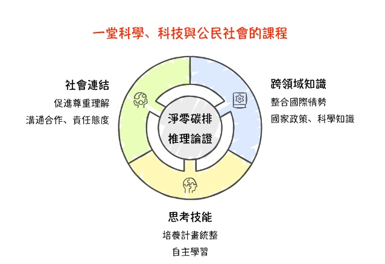
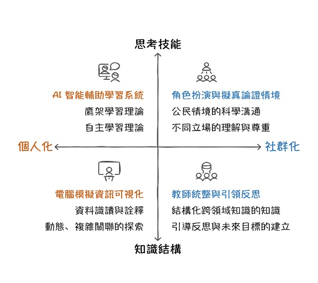
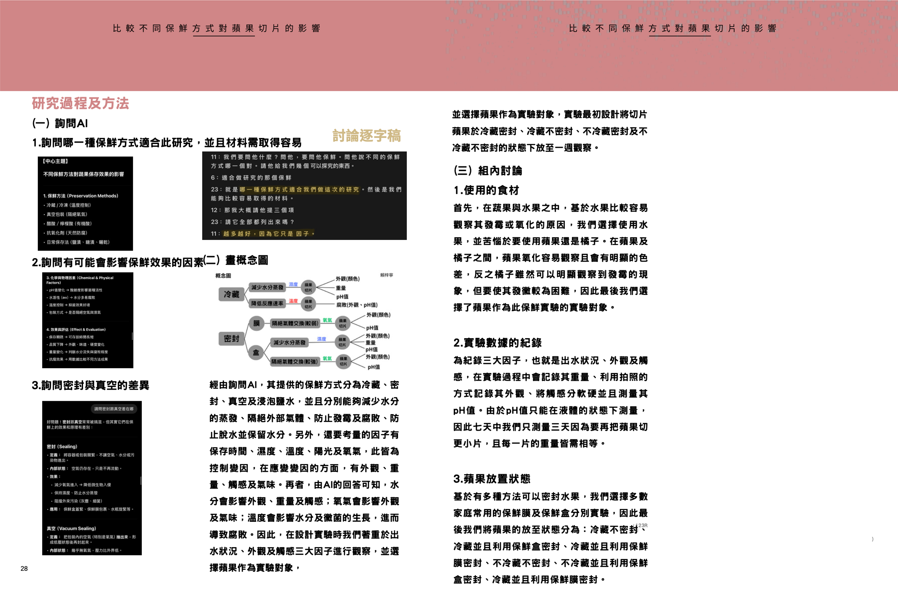

AISI智慧學習平台
重新定義師生角色的教育創新
運用科技實現真正的個人化學習，學生成為學習主體，教師轉為引導者，AI提供智慧化教學支援，創造兼顧個人化彈性與教育系統性的全新學習模式。
AISI平台運用科技重新定義師生角色：學生成為學習主體，根據個人基礎主動調整學習方向與步調；教師轉為定向者，透過ThinkForge功能預設引導方向，讓AI提供個人化引導並確保達成教學目標。
此模式創新在於兼顧個人化學習彈性與教育系統性，學生享有自主學習自由度的同時，仍在教師專業引導下掌握關鍵學習點，建構完整知識體系。

AISI平台針對國小學生的高學習動機與好奇心，提供差異化支援。針對學生經驗不足、缺乏即時適切回饋的挑戰，AISI如多元學習顧問，提供替代經驗與知識，引導學生社會化。
以「淨零碳排」為SDGs學習媒材，設計融合科學、科技與公民社會的自主學習課程。承襲108課綱「自發、互動、共好」精神，結合自主學習與鷹架理論，將淨零碳排論證拆解為四個維度：

AISI採用結構化的五階段教學模式，循序漸進引導學生從自學基礎建立到跨領域深度探討，實現完整的學習歷程。
透過雲端教室系統引入能源議題，要求學生選擇立場並說明理由，培養獨立思考與觀點表達能力。
透過圖像化說明引導學生理解高品質論述的要素，並指導AI學習平台的使用方法。
學生利用AI系統獲得即時回饋，發現論證不足並進行修正，透過自我對話強化論證能力。
學生透過麻省理工設計的電腦模擬進行資料收集與詮釋，與組員討論如何運用數據支持主張。
以角色扮演方式模擬政府、企業、環團、公民等不同立場，進行跨領域議題的深度辯論。
高中生雖具科學知識基礎，但缺乏動手操作機會，問題解決技能練習不足。即使學校提供探究實作機會，學生仍面臨不知如何開始、調整或評估問題解決效果等困境。
AISI內建科學探究聊天機器人，提供研究者楷模協助學生剖析問題結構。學生為有效互動必須培養問題意識與批判思考。
認知到真實世界的問題遠比紙本科學問題更加開放且複雜。整體探究過程包含：

集結最新教育科技，打造全方位智慧學習生態系統
根據學習者基礎與需求，提供客製化學習路徑與內容，確保每位學生都能在適合的步調中成長。
重新定義師生角色，教師成為學習引導者，學生成為學習主體，共同建構知識與能力。
內建智慧聊天機器人提供即時回饋與引導，協助學生發現問題、修正論證、深化思考。
提供學習過程中的即時評估與建議，幫助學生及時調整學習策略，提升學習效果。
從國小到高中階段，提供差異化的學習支援，適應不同發展階段的學習特性與需求。
透過模擬真實情境的角色扮演，讓學生從不同視角理解複雜議題，培養同理心與批判思考。